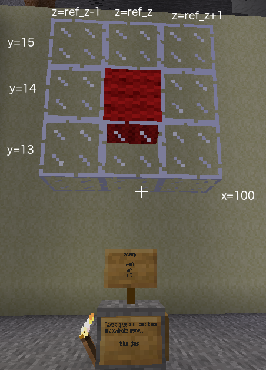

This is the easy course. Whenever the task asks for variable names or a formula, then it is also correct to just type in a number or list of numbers.
Find your sign in Minetest to find your second task. Then complete the program on the left to satisfy the task.
A program starts at the top and runs each line in sequence. If you want to place
several blocks, create a new build command for each block. When you have finished
all the build commands, run the send_building command to
send all the blocks you have built to Minetest. If two of the build commands
have the same x, y, z coordinates, the second will replace the previous block before it even gets sent
to Minetest.